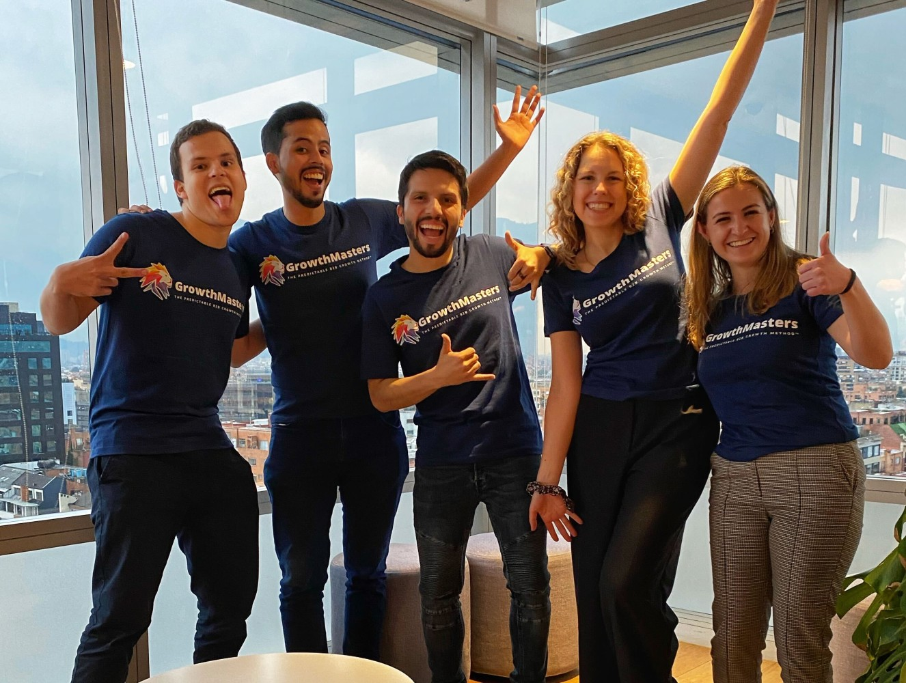
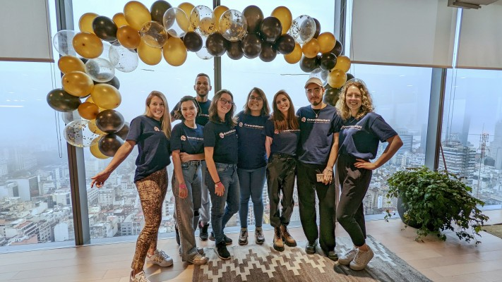
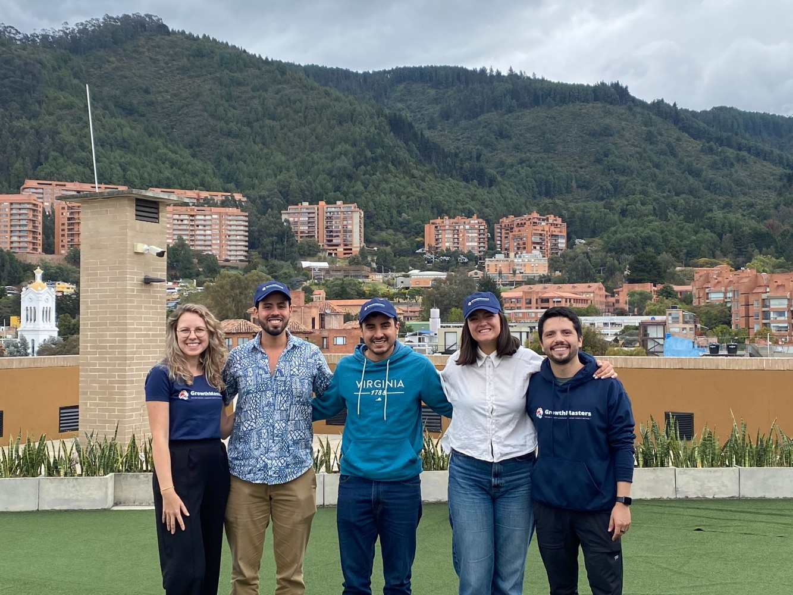
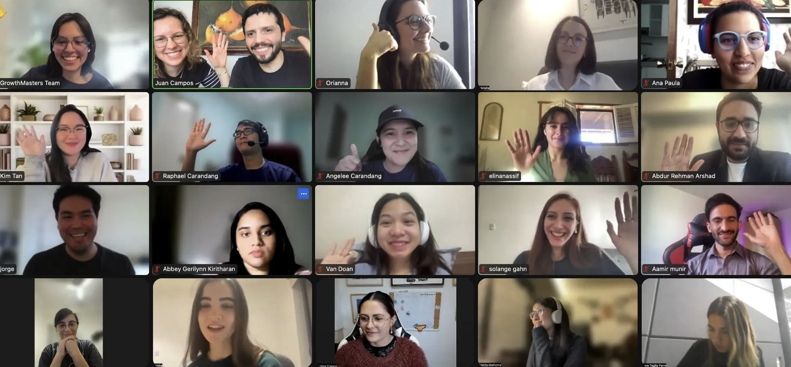
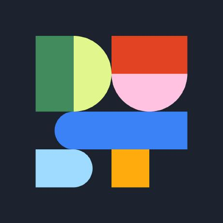
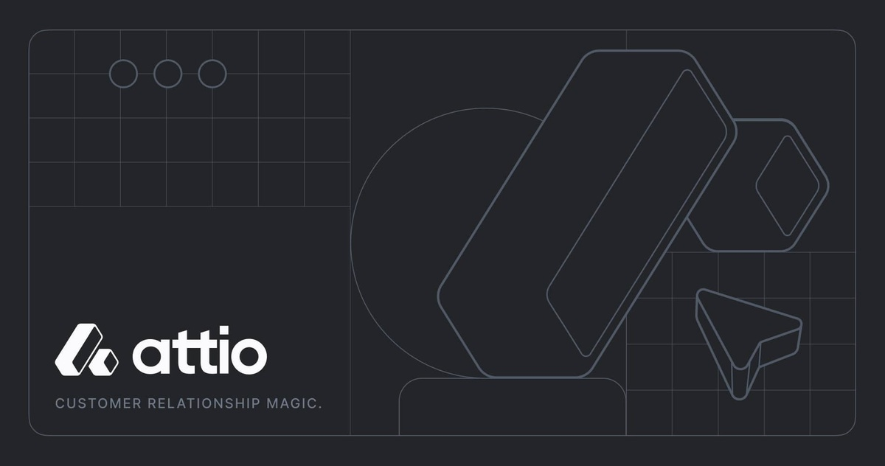
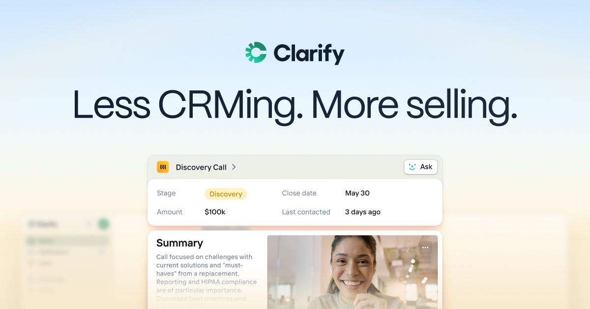

AI-First GTM
Del Concepto a la Ejecucion
Cuanto tiempo le toma a tu equipo prospectar 100 cuentas?
Juan Felipe Campos · GrowthMasters × 30x
Quien soy
Equipo de 14, bootstrapped. Construimos sistemas de GTM con IA para B2B SaaS.




Por que AI-first GTM ahora?
Lo que era imposible hace 12 meses
- Un agente AI genera 500+ actividades/dia de outreach personalizado
- Generar 200+ ads en 72 horas — copy, creativo, todos los formatos
- Scoring de 35,000 cuentas automaticamente con enrichment en tiempo real
- Propuestas, decks y follow-ups generados en 2 minutos, no 3 horas
El viejo playbook esta muerto
- Contratar mas BDRs no escala
- Herramientas genericas (SaaS de estante) no te diferencian
- Tus competidores ya estan usando AI
- El costo de construir herramientas a medida se desplomo
Hoy vas a aprender a construir tu propio motor de GTM con IA. No teoria — vas a salir con algo funcionando.
Esto es lo que tu AI hace en 30 segundos
| Empresa | Headcount | Funding | Tech Stack | Hiring | Score |
|---|---|---|---|---|---|
| Rappi | 5,200 | Series F · $2.1B | React, AWS, Kafka | ✓ 12 roles | 92 · A |
| Nubank | 8,000 | Public · IPO 2021 | Clojure, AWS, Spark | ✓ 8 roles | 88 · A |
| Kavak | 3,400 | Series E · $900M | Python, GCP, Redis | ○ 3 roles | 76 · B |
| Platzi | 800 | Series C · $62M | Next.js, AWS | ✗ No hiring | 61 · C |
| Clara | 600 | Series B · $150M | React, PostgreSQL | ✓ 5 roles | 79 · B |
Enrichment automatico via  Clay + Exa · Scoring con tu modelo de pesos personalizado
Clay + Exa · Scoring con tu modelo de pesos personalizado
Lo que vamos a construir
Workshop 1: GENERATE
Construye tu BDR AI agent — sourcing, scoring, copy, secuencias omnichannel, agendamiento automatico.
Top of funnel. Generar pipeline.
Workshop 2: CONVERT
Construye herramientas de AE AI — briefs, decks, proposals, pipeline health, reactivacion.
Mid/bottom funnel. Convertir pipeline en revenue.
Workshop 3: COMPOUND
Convierte transcripts de calls en decks, landing pages, posts, ads y CRM intelligence.
El flywheel. Cada call alimenta todo lo demas.
El Stack Moderno


Por que este stack?
- Todo API-first y listo para MCP
- Deploy en minutos, no semanas
- El AI puede operar cada componente
- Tu lo puedes mantener sin un CTO
Lo que reemplaza

Dust.tt →Claude Code N8N /
N8N /  Zapier → Claude Code
Zapier → Claude Code- Custom APIs → MCP tools
- Salesforce/
 HubSpot → Attio/
HubSpot → Attio/ Clarify
Clarify
Claude Code: tu cofundador tecnico
"Esta reemplazando la mayoria de nuestro stack tecnologico"
- CLI-first: vive en tu terminal
- Lee, escribe y ejecuta codigo
- Se conecta a cualquier API via MCP
- Claude Cowork: delegacion asincrona en background
- No es ChatGPT — es un agente que actua
DEMO: Claude Code en accion
Lo que vamos a hacer:
- Instalar Claude Code desde la terminal
- Configurar la API key
- Primer prompt: "Crea un proyecto Supabase con una tabla de leads"
- Ver como genera el schema, las funciones y le hace deploy
Supabase + Vercel: backend y deploy en minutos

Supabase
- Postgres database lista para usar
- Auth, Storage, Edge Functions
- Realtime subscriptions
- API auto-generada desde tu schema
- Free tier generoso para empezar
Vercel
git push= deployed- Preview URLs para cada branch
- Edge Functions globales
- Zero config para Next.js, static sites
- Free tier para proyectos personales
Juntos: tu backend y tu frontend listos en minutos. Claude Code los opera directamente.
CRM AI-First: Attio vs Clarify
Por que NO Salesforce o HubSpot para esto?
- APIs complejas, limites de uso agresivos
- Requiere admin dedicado
- No soporta MCP nativamente
- Excesivo para equipos <50 personas
- El AI no puede operar libremente
- API-first, listo para MCP
- Se configura en horas, no meses
- Sincronizacion nativa con email, calendario,
 LinkedIn
LinkedIn - El AI lee y escribe como un usuario mas
- Agentes de enriquecimiento y web search integrados

Attio — "Customer Relationship Magic"

Clarify — "Less CRMing. More selling."
Asi trabaja un agente de web search en tu CRM
Prompt: "Para cada empresa, busca en la web y evalua el fit tecnografico en una escala de 1-5 con razonamiento"
| Empresa | Headcount | Stack | Fit Tecnografico | Hiring Signal | Score Final |
|---|---|---|---|---|---|
| Rappi | 5,200 | React, AWS, Kafka | 4/5Usa React + AWS, sin CRM competidor | 5/512 roles abiertos en sales/ops | 92 · A |
| Kavak | 3,400 | Python, GCP, Redis | 3/5Stack propio, integracion parcial | 3/53 roles, crecimiento moderado | 76 · B |
| Clara | 600 | React, PostgreSQL | 4/5Stack moderno, compatible con integraciones | 4/55 roles abiertos, empresa en crecimiento | 79 · B |
| Platzi | 800 | Next.js, AWS | 2/5Sector educacion, bajo fit B2B SaaS | 2/5No hiring en sales | 61 · C |
MCP: como Claude Code se conecta a tus herramientas
Model Context Protocol — piensa en el como el USB-C de la IA
🔧
Herramientas
Acciones que el AI ejecuta:send_email(), score_lead()
📄
Recursos
Datos que el AI lee:
registros del CRM, transcripciones
💬
Prompts
Plantillas reutilizables:
briefings, rubricas de scoring
No necesitas saber programar. Necesitas saber que quieres que haga.
Como pensar GTM: Las 4 Dimensiones del Scoring
Mas dinero con menos esfuerzo — pon tus mejores recursos en las cuentas de mayor valor
Firmografico, tecnografico, headcount, funding
Seniority, departamento, autoridad de compra
Visitas, webinars, descargas, interacciones
Presupuesto, timeline, criterios de decision
Cada dimension tiene un peso diferente segun tu negocio. Los pesos se calibran con tu equipo.
Como pensar GTM: Audience → Offer → Mechanism
Audience
A quien le vendes? Se construye en Clay, tu CRM, LinkedIn Ads.
Offer
Que le ofreces? Demo, lead magnet, webinar, contenido cerrado, prueba gratis?
Mechanism
Como lo entregas? Email, LinkedIn, ads, SMS?
Trabaja hacia atras desde el resultado que quieres lograr. El canal es tactica — esto es estrategia.
EJERCICIO: Configura tu entorno
Necesitas esto para los proximos workshops:
- Claude Code instalado:
npm install -g @anthropic-ai/claude-code - API key de Anthropic configurada
- Cuenta de Supabase (free tier):
supabase.com - Cuenta de Vercel (free tier):
vercel.com - Prueba de CRM activa: Attio o Clarify
- Cuenta de Clay (free tier):
clay.com
Listos para
construir?
Siguiente: Workshop 1 — GENERATE
Para manana: tengan su stack configurado y hagan un primer prompt a Claude Code.